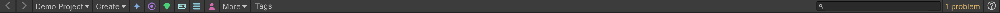

The toolbar
The toolbar runs along the top of The Forge.

The Forge's toolbar.
From left to right, it holds these controls:
| Control | What it does |
|---|---|
| Back, Forward | Go over the assets the detail pane has shown, as a browser's buttons do, up to 50 back. Going to an asset the list hides clears the search and turns its type's filter on. |
| Project menu | Switches between the Forge Projects. It's named for the active one. |
| Create | Makes a new asset of any type The Forge lists (New assets and presets). |
| Type filters | A filter for each PlayForge asset type, shown by its icon: Ability, Gameplay Effect, Item, Attribute, Attribute Set and Entity. On, a filter shows its type alone. Off again, the list shows every type. |
| More | Holds the filters of the other types The Forge lists: Scaler Asset, Requirement Template, Value Pipeline, Effect Modifier and Crowd Control Rules. It shows the name of the one chosen. |
| Tags | Shows the project's tags in place of its assets (The Tags view). |
| Search | Shows the assets whose name, file name or asset tag holds its text. |
| Problem count | Reads No problems, or a count such as 3 problems. It opens the Problems view. |
| Help (?) | Sits at the toolbar's end. It opens this guide's section on The Forge on the documentation site. |
The project menu
The project menu switches the active Forge Project. It reads the active project's name, No Project while none is active, and All Assets while the Unity project has none.
| Item | What it does |
|---|---|
| Each project | Makes that project the active one. The active one is checked. |
| No Project | Shows the assets in no project. It's listed where no project sits at the root of Assets. |
| New Project… | Makes a project (The project and its folder). |
| Show in Project | Selects the active project's asset. |